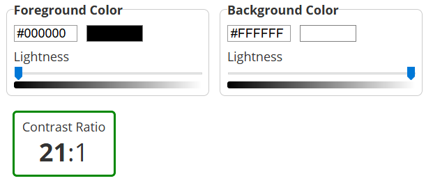
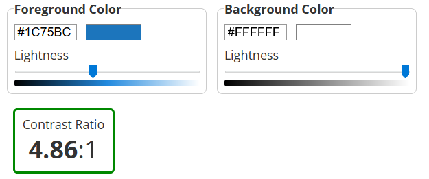
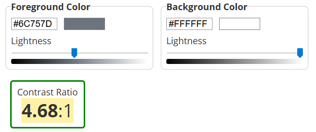
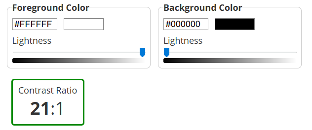
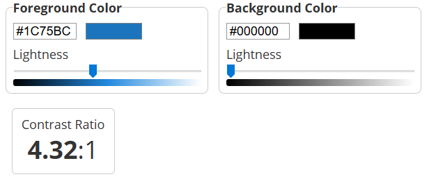
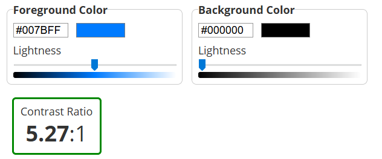
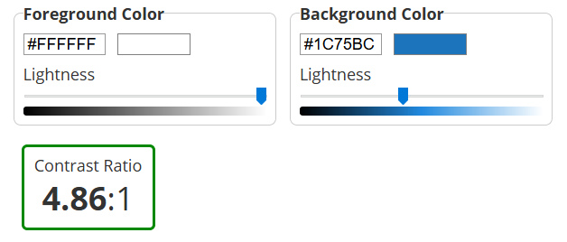
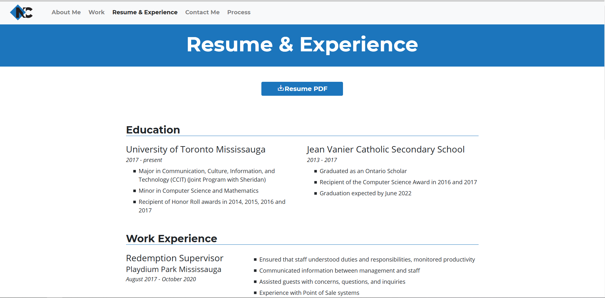

Colours and Contrast
Colour Palette
In deciding on a colour scheme for my portfolio, I decided I wanted the colour scheme to match my personal logo that I had made earlier in the year.
My logo uses 3 colors primarily, black (#000), white (#fff) and blue (#1c75bc).
In making a portfolio website focused mainly on Design, I felt it was important to keep a consistent color scheme that matched my personal logo. However, I didn't want to limit to just one background colour and two foreground colours.
Contrast Audit
So, I decided to use all three colors as background colors at certain points. I ensured that I could use them as background colors according to AODA standards by using font size and styling.
AODA requirements for 2021 demand that websites conform to at least WCAG 2.0 Level AA.
In terms of contrast and type, WCAG 2.0 states that text have a contrast ratio of at least 4.5:1, except for large text which has a requirement of at least 3:1.
For White backgrounds, black was primarily used. The contrast for this is 21:1. One shade of blue (#1c75bc) is used occasionally to show links or certain headings. This contrast is 4.86:1, which is above the AA requirement. A grey color (#6c757d) is used for navigation links, with a contrast of 4.68:1.
  For Black backgrounds, white was primarily used. The contrast for this is 21:1. The same blue (#1c75bc) was used occasionally to show certain larger headings. This contrast is 4.32:1, which is above the AA requirement for larger text. A different shade of blue (#007bff) was used for links, with a contrast ratio of 5.27:1.
  For Blue backgrounds (#1c75bc), white was primarily used. The contrast for this is the same 4.86:1. Blue backgrounds were only used with very large headings.
Typography
Firstly, I decided to look for an attractive looking bold typeface for my Website. I had always been fond of Montserrat, so I decided on the bold variation of Montserrat.
I decided to use Montserrat Bold (Weight 700) prominently throughout my website, as a heading, link, and navigation font.
In looking for a suitable body font, I had to consider the attractiveness of the pairing between the two fonts, while ensuring that the body font is clearly visible at all sizes. While looking at the Google Fonts listing for Montserrat, one suggested pairing was Montserrat with Open Sans. I know that bolder/weightier fonts look good with lighter fonts, so Open Sans seemed like a good fit for the body font. It is clearly readable at many sizes, and is distinguishable from the bolded Montserrat. I decided to implement it onto my site, at regular weight (weight 400).
Both Montserrat and Open Sans are used from Google Fonts. Pictured on the left is the Google Fonts suggested pairing for Montserrat.
Accessibility Audits
Structure and Sequence
WCAG2.0 Level A requires sites to be in a structural manner using heading levels and other elements.
My site properly uses heading levels by nesting heading levels within other headings. The sequence of content is clear and similarly done between pages, featuring the navigation, body with headings, and a footer.
Labels
WCAG Level AA requires websites to have descriptive labels that state the purpose of its interface component.
For all forms, I use labels to make inputs more accessible. They are clickable to start input. They clearly describe the input field they are associate with.
Orientation
WCAG Level AA requires websites to have unrestricted orientation that allows the site to be accessible on all devices.
My site is responsive on all device types, widths, and orientations. This is achieved by using Bootstrap grids, Javascript, and media queries when necessary.
Error Checking
WCAG requires websites to prevent user input errors.
My site's Contact Me form features "required" tags which prevent the user from submitting a form with empty fields.